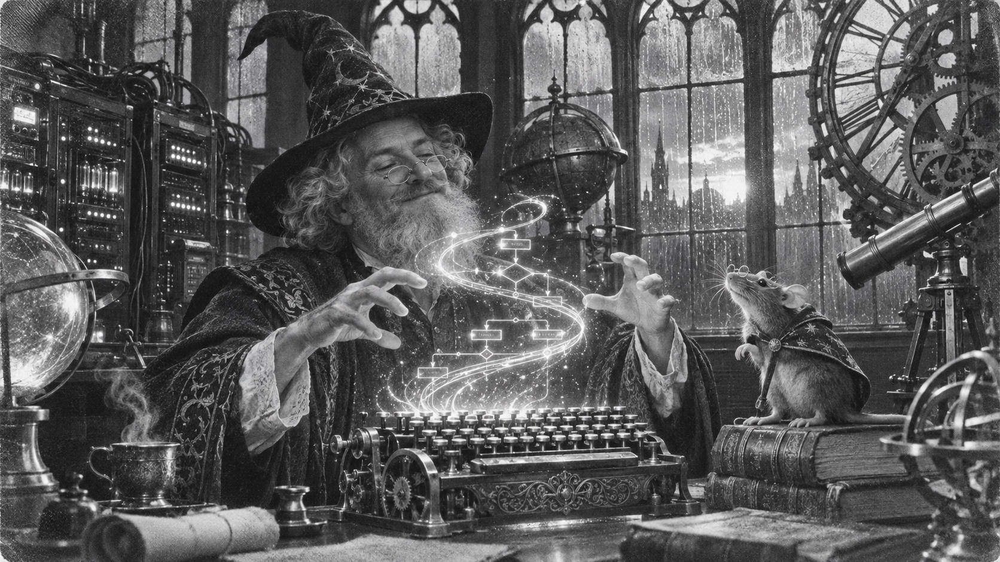

Morning Edition
6:00 AM CSTFinance & Markets
Wall Street Logs Its Longest Slide Since 2024
The S&P 500 fell for a sixth straight session as AI-linked stocks kept retreating, leaving the index 8.2% below last month’s record. The Dow dropped 1,101 points and the Nasdaq lost 2.3%, a blunt reminder that even transformative technology must eventually compile into durable cash flow.
Source: Associated Press, November 19, 2026GTCR Explores a Global Payments Takeover
Private-equity firm GTCR is exploring a possible bid for Global Payments and is reportedly working with other firms on financing. No final decision has been made, but the renewed interest shows how sponsors are testing the limits of mega-deal financing while public valuations reset.
Source: Reuters via MarketScreener, November 20, 2026World & US
Climate Talks Run Into Overtime
Negotiators pushed the global climate summit past its deadline while wrestling over how to answer worsening warming and how much responsibility richer economies should carry. The overtime is a familiar systems lesson: everyone can agree the production incident is real while still arguing over who owns the fix.
Source: Associated Press, November 21, 2026Iran Deal Doubts Raise the Stakes
President Trump said Iran still had not offered an acceptable agreement as Gulf states pressed for a durable diplomatic path and worried about renewed fighting. The gap between public positions and a workable settlement remains wide, keeping energy markets and regional security on edge.
Source: Associated Press, November 20, 2026Russia Seizes on a US Security Proposal
The Kremlin welcomed a U.S. proposal to revisit Europe’s broader security framework, while European officials warned that Moscow could use the discussion to revive longstanding demands before a ceasefire. The diplomatic sequence matters: architecture drawn before the outage stops can preserve the wrong assumptions.
Source: Associated Press, November 20, 2026China’s Nuclear Buildout Moves to Center Stage
Trump said China is expanding its nuclear arsenal rapidly and could catch the United States within a decade, a day after meeting Xi Jinping. The claim puts strategic stability, verification and the future of arms-control frameworks back near the top of Washington’s foreign-policy queue.
Source: Associated Press, November 20, 2026
The Saturday Spell: simplify the system, protect the signal, and let the good work compound.
“Consistency is how a small spell becomes a powerful system.”— The Developer’s Almanac
Sagittarius Developer Horoscope
Justin, the stars favor a reset built from small, healthy habits. A useful conversation about work may reveal the refactor you could not see alone, so listen for the one sentence that changes the shape of the problem. Your Sagittarius fire wants the whole horizon; your Year-of-the-Rat ingenuity knows that steady, clever steps win the maze. Pick one routine that makes tomorrow easier, automate one annoyance, and leave the system kinder than you found it. Your lucky command is clarify --one-thing && improve --daily && ship --calmly. Today’s rule: consistency is quiet magic with excellent uptime.
Tech, AI, Space & Crypto
-
Anthropic’s Debut Meets the AI Reality Check
Anthropic closed its first trading day at $97.17, up 17.1%, even as the broader AI complex sold off hard. The contrast gives developers and investors a live test of whether frontier-model demand can outpace the enormous cost of compute, talent and trust.
Source: Associated Press, November 19, 2026 -
NASA Seeds Small-Business Moon and Mars Tech
NASA announced new SBIR and STTR seed funding for small businesses tackling crucial exploration technologies. The program turns narrowly scoped experiments into options for the Moon, Mars and the broader U.S. space economy—exactly the kind of portfolio where many cheap probes can reveal one powerful path.
Source: NASA, November 20, 2026 -
Dragon Heads Home With 6,300 Pounds of Science
A SpaceX Dragon undocked from the International Space Station carrying research samples, hardware and crew supplies back toward Earth. Its return cargo includes experiments whose value depends on a less glamorous engineering superpower: getting the data home intact.
Source: NASA, updated November 20, 2026 -
Bitcoin Falls to a Two-Year Low
Bitcoin slid below $57,000 as the AI-stock rout spilled into other risk assets and leveraged positions unwound. The move erased the cushion built during the last several months and made liquidity—not narrative—the dominant variable for the weekend.
Source: Reuters via Investing.com, November 21, 2026
Morning Compile
- Markets: the S&P 500 logs its longest losing streak since 2024 as AI valuations reset.
- Private capital: GTCR explores a potentially enormous Global Payments takeover.
- World: climate talks run overtime; Iran diplomacy and European security remain unsettled.
- US: China’s nuclear expansion returns arms-control architecture to Washington’s agenda.
- AI: Anthropic’s strong debut collides with a broader selloff in AI-linked stocks.
- Space: NASA seeds small-business exploration tech and Dragon brings station science home.
- Crypto: bitcoin falls below $57,000 to its lowest level in two years.
- Today’s spell: choose one healthy routine, automate one annoyance, and let consistency compound.